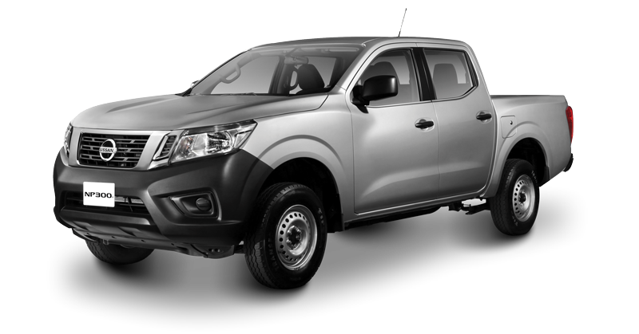

Sección de Noticias
Audi Q5 Híbrido sera fabricado en México Audi de México dio a conocer que en breve iniciará la producción del Audi Q5 híbrido que se exportará a Norteamérica y Europa. |
 Toyoto Corolla 2020 El Toyota Corolla 2020 lleva dos opciones de motor. Las versiones Base y LE llevan el bloque de 1.8 litros en México, heredado del modelo anterior. Desarrolla 139 hp y 126 lb-pie, se controls a través de una nueva transmisión automática CVT y, de acuerdo con la EPA, promete un rendimiento de 12.7 km/l en ciudad y 16.1 km/l en carretera. El SE, tope de gama, incorpora un bloque de 2.0 litros de 168 hp y 148 lb-pie, también asociado a una caja CVT. |
SEAT Terraco La nueva SUV de seat pronto llegara a México sera el nuevo buque insignia de la marca española en cuanto a sus SUV. |
|---|---|---|
Acura ILX 2019 Tal y como ha sucedido con RDX o TLX, el Acura ILX también está disponible en versión A-Spec de apariencia más deportiva. Lo notaremos por los rines de 18 pulgadas en el resto de las versiones son de 17 y una serie de vistosos accesorios aerodinámicos en acabado negro brillante, tanto para el frente, como para la trasera. |
El nuevo Kia Forte GT Desde el año pasado KIA había dado mucho que hablar con su Forte GT, la versión "picante" de su compacto que poco a poco va ganando terreno frente a sus competidores. La variante que más polémica generó fue el sedán, pues de inmediato muchos lo colocaron como un rival directo del Volkswagen Jetta GLI que en aquel entonces aún no se presentaba con su nueva generación. Ahora tras unos meses de espera el KIA Forte GT Sedán por fin está aquí con un precio de $451,900. |
 Nissan NP300 los tres autos más robados fueron Tsuru, pick up NP300 y Versa de la marca Nissan, pero lo que se lleva del año 2019 la Marca Nissan sigue siendo una de las marcas mas robadas en México sea por la falta de seguiridad al proteger sus vehículos. |